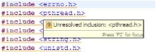

You may want to disable the default editor setting that automatically performs syntax annotation highlighting in the editor.
To disable syntax annotation highlighting:
-
In the editor, hover the mouse over the yellow wavy line until the popup appears.

-
Press F2 to have the focus for the popup.
-
In the bottom-left corner of the pop-up window, click the Configure Annotation Preferences button to open the Preferences window.
In the Preferences window for Annotations, the C/C++ Indexer Markers option will be preselected for you.
-
Deselect the Text as button.
-
Click OK.